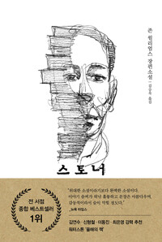

『스토너』를 절반쯤 읽고 모인 첫 시간. 자극이라곤 없는 이 담담한 소설이 왜 지금 읽히는지를 두고 가볍게 문을 열었고, 농대생 스토너가 셰익스피어 강의에서 문학에 붙들리는 장면을 붙잡아 각자의 '부름 받은 순간'을 꺼내놓는 나눔으로 깊어졌다. 부르심의 정의, 평범함과 비교, 해야 하는 것과 하고 싶은 것 사이의 선택이 차례로 화제가 됐고, 다음 책으로 만화 『창조론 연대기』를 정하면서 창조와 과학을 둘러싼 긴 대화가 이어졌다. 공식 모임이 끝난 뒤에도 진행자는 처음 마음을 낸 한 청년과 자정 가까이 남아 신학 문답을 이어갔다.
심심한 소설이 왜 지금 읽히는가
모임은 이 잔잔한 책이 어째서 뒤늦게 사랑받는지를 궁금해하는 잡담으로 느슨하게 시작됐다. 영화로 만들면 오히려 재미없을 것 같다는 말, 배우의 연기가 전부일 거라는 말이 오갔고, 한 참석자는 드라마 '나의 아저씨'처럼 묵묵히 일상을 견디는 이야기의 결을 떠올렸다.
진행자는 요즘 세상엔 자극이 넘치는데 이 책에는 자극이 없다는 점을 짚었다. 아침에 일어나 출근했고, 사람을 만났고, 힘들었지만 계속했다 — 그렇게 담담하게 써 내려가는 문체 자체가 이 시대의 독자에게 닿는 것 같다고. 같은 과자라도 시대를 탄다는 말에 다들 고개를 끄덕이며 본론으로 들어갔다.
부름 받은 순간들 — 진행자의 소명 이야기에서 시작된 나눔
진행자가 먼저 물었다. 스토너가 셰익스피어의 소네트 앞에서 문학으로 '부름 받는' 장면처럼, 살면서 부름 받았다고 느낀 순간이 있느냐고. 그리고 자신의 이야기를 먼저 내놓았다. 기도원에서 아버지를 위해 기도하던 중 부흥사가 '여기 목회자가 있다'며 앞으로 나오라 했을 때 일어섰던 일, 그러나 목사로의 부르심이 확실하냐고 지금 물어도 사실 잘 모르겠다는 솔직한 고백까지. 목회를 하다 보니 '이게 맞는 것 같다'는 생각이 드는 순간들이 쌓여가는 중이라고 했다.
그 솔직함이 물꼬를 텄다. 한 참석자는 두려움에 자리를 뛰쳐나가다 붙들려 다시 들어간 그날 하나님을 인격적으로 만난 밤을 이야기했고, 다른 참석자는 새벽까지 일해도 즐거웠던 일을 내려놓고 다음 세대 아이들에게로 방향을 튼 여정을 나눴다. 침을 뱉던 여섯 살 아이가 석 달 만에 변해가는 것을 곁에서 지켜본 경험이 가랑비에 옷 젖듯 마음을 적셨다는 대목에서, 부르심이란 극적인 음성이 아니라 시선이 옮겨가는 과정일 수 있다는 결이 잡혔다.
평범함과 비교, 그리고 영웅 없는 성경
위인전은 권하면서 평범함은 아무도 강조하지 않는데, 이 책은 평범함을 정면으로 이야기해서 사람들을 매료시키는 것 같다는 관찰이 나왔다. 한 참석자는 사회적으로 잘나가는 지인들의 소식을 들을 때마다 특별하지 못한 자신에 대한 아쉬움이 은근히 올라왔다고 고백하면서, 비교라는 것의 기준점이 결국 상대방일 뿐임을 깨달았다는 이야기로 이어갔다. 늦둥이를 키우는 일상도 하나님의 기준에서 보면 하나의 사명이고, 그 안에 만족이 있으면 성공한 인생이라는 결론이었다.
진행자는 한 드라마 속 대사를 빌려 세상이 끊임없이 영웅 서사를 요구해왔음을 짚었고, 한 참석자가 '성경은 실패한 인생도 적나라하게 보여줘서 매력적'이라고 받았다. 성경에는 영웅이 별로 없다는 짧은 합의가, 스토너라는 인물을 읽는 이 모임의 각도를 정해주었다.

모든 순간이 부르심이다 — 수동태의 신앙
한 청년이 부르심의 정의 자체를 따져 물었다. 알 수 없는 힘에 의해 어떤 자리에 존재하게 되는 것이 부르심이라면 모든 순간이 이미 부르심인데, '특별한 부르심'을 따로 묻는 것은 모순 아니냐는 것이다. 진행자는 그 논리를 그대로 긍정하며 받았다.
이어서 사도신경 이야기가 나왔다. 성부와 성령에 대한 고백은 명사형인데 성자에 관한 서술은 모두 동사이고, 그 동사가 전부 수동태라는 어느 신학책의 통찰이었다. 잉태되시고, 죽으시고, 살아나신 — 예수의 삶 자체가 부르심에 끌려가는 삶이었다면, 우리도 그럴듯한 성취로 스스로를 증명할 필요 없이 끌고 가시는 여정에 응답하면 된다는 것. 잘하려는 생각이 가장 위험하고 근거 없는 자신감이 필요하다는 어느 학자의 말이 곁들여지며, 부르심은 부담이 아니라 오히려 자유라는 쪽으로 이야기가 기울었다.
해야 하는 것과 하고 싶은 것 사이
한 참석자는 인생의 갈림길마다 하고 싶은 것보다 해야 하는 것, 옳고 안정된 쪽을 선택해왔다고 털어놓았다. 그 절제가 결과적으로는 좋았지만 보상을 뒤로 미루는 습관으로 굳어버려서, 먼 훗날 '그때 그걸 했어야 했는데' 하고 후회하지 않을까 하는 딜레마를 안고 있다는 것이다. 스토너처럼 부모의 기대를 거스르고 사랑하는 학문을 택한 용기가 부럽다는 반응도, 자신은 그 용기가 없어 현실을 택했다는 고백도 함께 나왔다.
진행자는 거창고등학교의 직업 선택 십계명을 읽어 내려갔다. 월급이 적은 곳으로 가라, 아무도 가지 않는 곳으로 가라, 부모가 결사반대하면 틀림없으니 가라. 문화가 끊임없이 우리에게 먹이는 이야기에 길들여진 습관적 선택을 무너뜨리고 십자가의 길을 가리키는 문장들이라고 했다. 그리고 물었다. 바울은 목이 잘리는 순간 무슨 생각을 했을까. 찬양하며 죽어간 웨슬리는 마지막 호흡이 영원의 첫 호흡이 될 것이라 말했다는데 — 행복이 기준인 삶과 부르심이 기준인 삶은 죽음의 자리에서 갈라진다는 이야기였다.
1965년의 무명작이 살아난 이유, 그리고 남은 밤의 문답
책이 출간 당시에는 묻혔다가 2000년대에 와서야 재발견된 이유가 궁금하다는 물음이 나왔다. 전쟁을 두 번 치른 시대의 독자들은 영웅과 재건의 이야기를 원했고, 홀로 고독하게 견디는 삶은 오히려 낯설었을 것이라는 분석, 개인이 파편화된 지금에야 스토너가 곧 나로 읽힌다는 분석이 이어졌다. 남들이 영웅을 쓸 때 자기가 쓰고 싶은 것을 썼다는 점에서 작가 자신이 스토너를 닮았다는 이야기, 작품 속 교회 장면을 두고 작가가 기독교인이었을지 가늠해보는 이야기도 오갔다. 진행자는 저자의 의도를 캐던 시대에서 해석이 독자에게 넘어간 시대로의 변화를 짚으며, 바로 그 다양한 읽기를 해보자는 것이 이 북클럽이라고 정리했다.
다음 책은 만화 『창조론 연대기』로 정해졌고, 그 김에 창조과학과 과학, 성경관을 둘러싼 긴 대화가 이어졌다. 반대 의견을 가진 사람들이 마주 앉아 이야기할 수 있는 곳은 이제 교회밖에 없다는 것이 진행자의 지론이었다. 모임이 끝난 뒤에도 이야기는 끝나지 않았다. 진행자는 이날 처음 마음을 내어 남은 한 청년과 자정 가까이 마주 앉아 자유의지와 신정론, 고통의 문제까지 오가는 일대일 문답을 이어갔고, '네가 온 것 자체가 나에게는 기적'이라는 말로 그 밤을 맺었다.